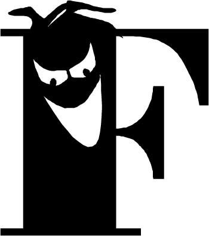
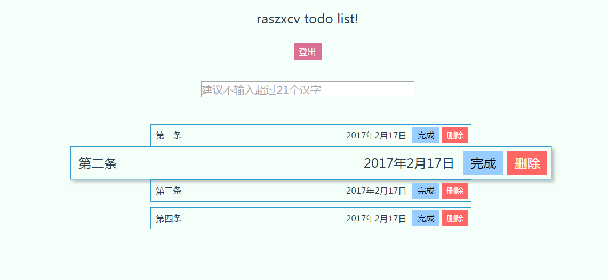

-

范悦
前端工程师
Email:282975975@qq.com
Tel:18665808326
-
基于Vue制作的带登录功能的Todolist预览
使用技术:
Vue Webpack JS LeanCloud
项目描述:
可以注册,登录账户.输入的信息会保存在leanCloud上,有完成标识功能和删除功能.
实现细节:
根据LeanCloud的文档,根据其提供的api,实现注册,登录以及保存list内容.这样子在刷新页面或者重新登录后内容不会消失.
-
使用jQuery制作的音乐FM播放器预览

使用技术:
jQuery js
项目描述:
可以使用基本的播放暂停,调节音量大小.点击下一首可以随机获取该风格的音乐.可讲播放器缩小为一个小图标,可自由拖动.
实现细节:
利用了HTML5的audio标签,可以在页面上嵌入音频文件,然后通过该标签的属性就饿方法来控制音乐开始,暂停,音量调节,歌曲进度等功能.利用数组保存上一首歌曲,但最多只保存一首.并实现了歌曲进度条拖拽功能.最后使用构造函数生成一个播放器对象.
-
项目经验
-
自制下厨房首页
运用了浮动、定位、负 margin、sprite 图、垂直居中等知识点 完成页面的布局.并使用了懒加载提高页面加载效率.最后使用 requirejs 进行模块化管理.
-
Vue制作的今日头条界面
使用 vue 官方工具 vue-cli 搭建的一个今日头条移动端界面.可 以编辑首页导航条内容,利用Vue-router实现底部切换路由功能.
-
一个渐变轮播插件
使用构造函数进行封装,可以实现同一页面多个轮播同时运行.
-
-
技能掌握
- 1.掌握 HTML/CSS 的基础知识,理解盒模型、BFC、负边距.
- 2.对代码的规范性、语义化有一定认识,可以写出符合 W3C 规范的页面.
- 3.熟悉常见效果、原生、事件模型、DOM 操作、ajax、闭包、原型链、 函数的作用域、继承等方法.
- 4.熟悉 npm 包的使用,可以使用 nodejs 工具完成基本的前端构建.
- 5.了解 vue 基本使用并理解其基本组件化思想
- 6.可以通过webpack进行简单的配置工作来开始Vue的开发.
- 7.可以通过git进行简单的提交工作
-
感谢您花时间看完我的简历,希望有机会能与您共事!
这里是PDF版